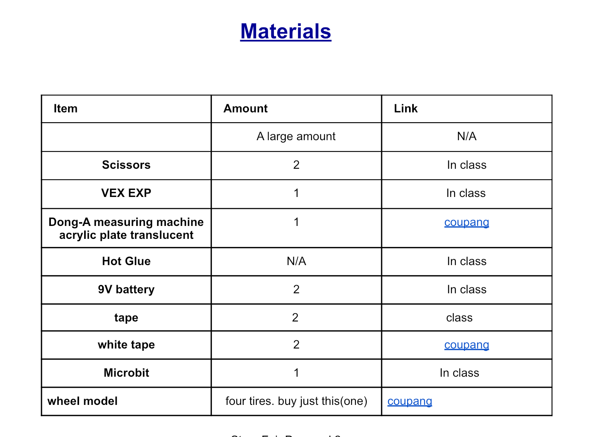
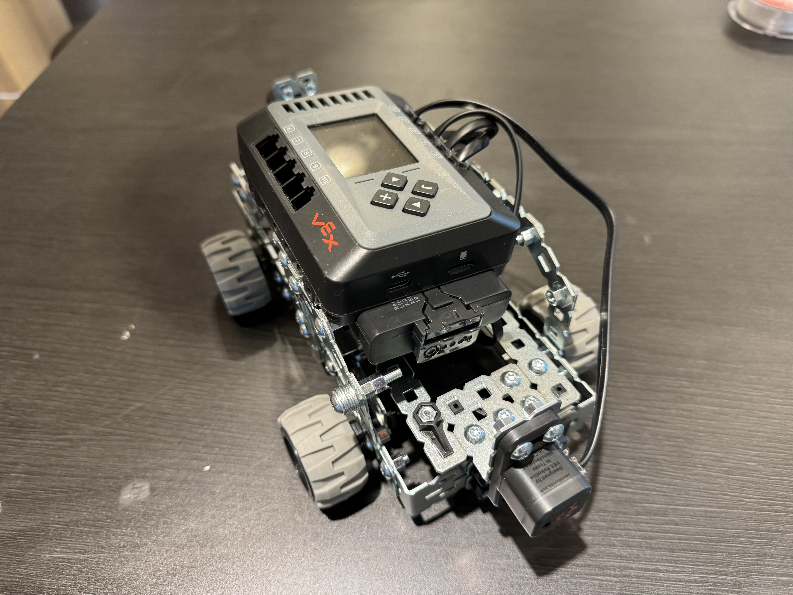
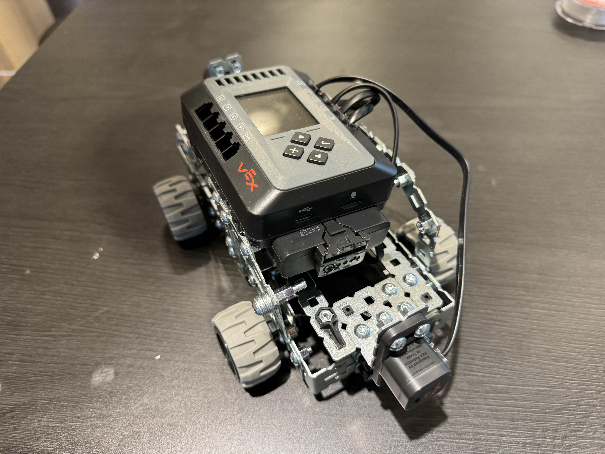

Ask : People works for city. Because of that, people have a lot of problems such as labors working time or accident.
To solve, this we decided to reduce working time, so we use AI Robot in the city
Imagine : To solve, we decided using robot. And I focused on making car. First, I made a car frame using vex ex; education.
Next, I used code program for vex exp. I made a code to move vex exp.
Plan : First, I draw approximately car in paper. Using that, I made a frame of car using vex And I put my code into my car
Create : I create a car which move automatically by remote control. Infront of car, there are two distance sensor. It can detect if the distence car and other object is close
Improve : It is hard to make with mystibil initial design.
So, I made car without my design, but my then my car is so week. So that , I fixed it.
Team Good. We made a poster. Ku, Kim, Jenny made a poster and Key Jenny made a aty desgn
and I made a Car.

This is my material list
For Stemfair project, I made a smart car which can move automatically Using vex exp education, I made a frame of car. Also I use a In this project, I learned how to code vex robot
 
